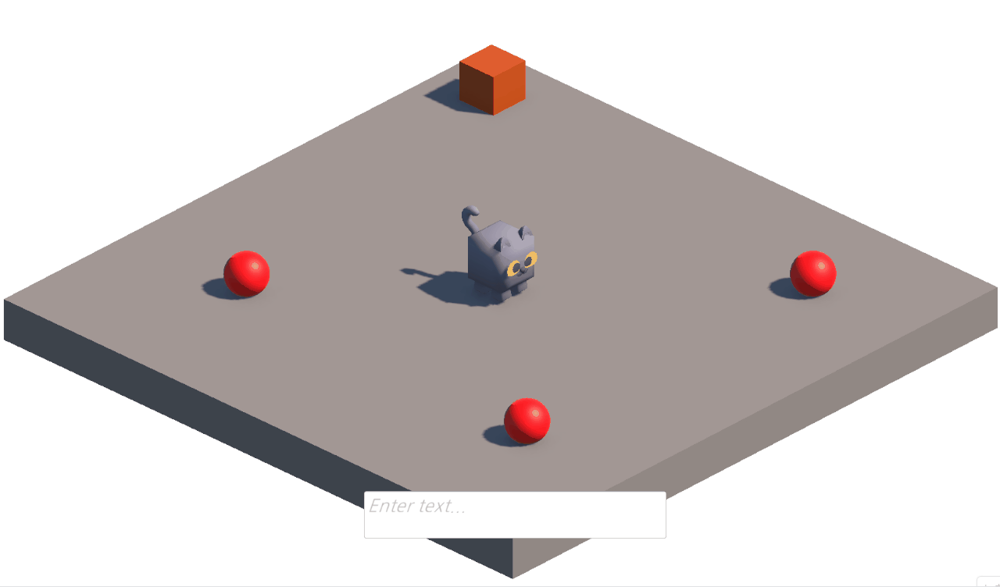

명령안에 세부 명령 의도가 내포 되어 있음
플레이어 입력은 “사과를 박스에 담아”처럼 이동, 획득, 배치 의도가 한 문장 안에 섞입니다. Unity는 자연어를 그대로 실행할 수 없기 때문에 명령을 실행 단위로 나누는 과정이 필요했습니다.
AI NPC Prototype
플레이어의 자연어 명령을 LLM 기반 백엔드가 해석하고, Unity NPC가 실제 게임 월드에서 이동, 아이템 획득, 내려놓기, 정지 액션으로 실행하는 자연어 기반 Unity NPC 제어 시스템입니다.
정해진 명령어를 외우지 않아도 NPC에게 자연어로 행동을 지시할 수 있는 프로토타입입니다. Unity 클라이언트와 FastAPI 백엔드를 WebSocket으로 연결하고, 백엔드는 입력 의도와 현재 Unity 상태를 바탕으로 NPC가 실행할 수 있는 구조화된 액션 시퀀스를 생성합니다.
플레이어 입력을 먼저 대화와 실행 명령으로 분류해 잡담과 행동 요청을 분리했습니다.
명령으로 판단되면 벡엔드의 Planner Agent가 Unity에 씬 오브젝트, NPC 상태, 인벤토리 정보를 조회할수 있는 Tool을 사용해 현재 씬의 정보를 확인하고, 구조화된 명령 리스트로 변환하는데 사용합니다
백엔드가 생성한 구조화된 명령리스트를 Unity NPC가 액션 큐에 등록하고 순서대로 실행합니다.
플레이어 입력은 “사과를 박스에 담아”처럼 이동, 획득, 배치 의도가 한 문장 안에 섞입니다. Unity는 자연어를 그대로 실행할 수 없기 때문에 명령을 실행 단위로 나누는 과정이 필요했습니다.
NPC가 런타임 중에 실행할수 있는 행동들을 최소 단위(`MOVE_TO`, `GET_ITEM`, `PUT_ITEM`, `STOP`)로 정의하고, 복합적인 의미가 있는 명령을 순서가 있는 최소단위의 명령 목록들로 바꿔야 했습니다.
Planner가 Unity 씬 오브젝트, NPC 상태, 인벤토리를 tool call로 조회하게 하고, 결과를 구조화된 JSON 스키마로 반환하도록 구성했습니다. Unity 측에서는 받은 액션을 큐에 넣어 순차 실행했습니다.
“사과를 박스에 담아” 같은 입력을 이동(사과), 획득(사과), 이동(박스), 내려놓기(박스) 흐름으로 변환해 NPC가 실제 게임 월드에서 순서대로 행동하도록 만들었습니다.
자연어 입력, Unity 상태 조회, 최종 명령 응답이 한 번의 요청과 응답으로 끝나지 않고 Unity와 백엔드가 계속 주고받아야 했습니다.
WebSocket 연결 하나에서 플레이어 입력, `client_function_call`, `client_function_result`, `final_command` 메시지를 처리하도록 구성했습니다.
상태 조회와 최종 명령 전달을 같은 연결에서 처리해 통신 흐름이 단순해졌고, 명령 생성 중 필요한 Unity 정보를 즉시 확인할 수 있는 구조가 되었습니다.
잡담이나 질문까지 모두 명령 플래너로 보내면 불필요한 명령 파싱이 발생하고, 행동이 필요 없는 입력이 잘못된 액션으로 이어질 수 있었습니다.
사용자 입력을 먼저 `dialogue`와 `command`로 분류하고, 실제 행동 요청으로 판단된 입력만 Planner Agent로 전달했습니다.
행동이 필요 없는 입력이 플래너까지 전달되는 흐름을 줄였고, 실제 액션이 필요한 명령만 NPC 실행 큐로 이어지게 해 명령 처리 경로가 더 명확해졌습니다.
LLM이 현재 씬의 오브젝트 위치나 NPC 인벤토리를 모르면 존재하지 않는 대상이나 잘못된 순서의 명령을 만들 수 있었습니다.
Planner Agent가 `find_scene_objects`, `get_agent_state`, `get_inventory` 같은 Unity 조회 도구를 호출해 현재 씬 상태를 확인하도록 구성했습니다.
자연어 대상이 실제 씬 오브젝트와 연결되어 대상 선택 오류를 줄일 수 있었고, 인벤토리 상태를 반영해 획득 후 내려놓기 같은 순차 행동을 더 안정적으로 생성할 수 있게 되었습니다.
LLM 응답이 자유 텍스트 형태라면 Unity가 실행 가능한 명령인지 검증하거나, 여러 행동을 순서대로 실행하기 어려웠습니다.
응답을 `actions` 배열로 제한하고 각 액션에 `command`, `object_name`, `object_id`, `position`을 담도록 설계했습니다.
Unity가 LLM 응답을 별도로 해석하지 않아도 되어 실행 로직이 단순해졌고, 복합 명령도 동일한 액션 큐 규칙으로 처리할 수 있어 기능 확장과 검증이 쉬워졌습니다.
“그거 내려놔”, “다른 거 가져와”처럼 이전 대화에서 언급한 오브젝트를 지시대명사로 다시 가리키는 입력을 이해하려면 AI가 이전 대화 내용과 마지막 명령 결과를 알고 있어야 했습니다.
대화 담당 LLM과 명령 담당 Planner Agent가 분리되어 있기 때문에, WebSocket 연결마다 공통 세션 메모리를 만들고 최근 메시지, 요약, 마지막 명령 결과를 함께 관리했습니다.
대화 AI와 명령 Agent가 같은 맥락을 공유하게 되어 “그거”, “아까 말한 것”처럼 이전 대상을 참조하는 입력도 기능적으로 처리할 수 있는 기반을 만들었습니다.
모든 대화를 계속 프롬프트에 넣을 수는 없기 때문에, 최근 메시지가 일정 개수 이상 쌓이면 오래된 내용을 별도 LLM 호출로 요약해 필요한 맥락만 유지하도록 했습니다.
LLM이 어떤 상태 조회를 거쳐 명령을 만들었는지 보이지 않으면, 잘못된 명령이 나왔을 때 원인을 추적하기 어려웠습니다.
tool call과 tool result를 SSE 이벤트로 기록하고, 브라우저 디버그 뷰에서 시간순으로 확인할 수 있게 구성했습니다.
명령 실패나 잘못된 대상 선택이 발생했을 때 LLM 판단 과정과 Unity 응답을 분리해서 확인할 수 있어, 원인 추적과 반복 디버깅이 쉬워졌습니다.
Player Input
사과를 박스에 담아